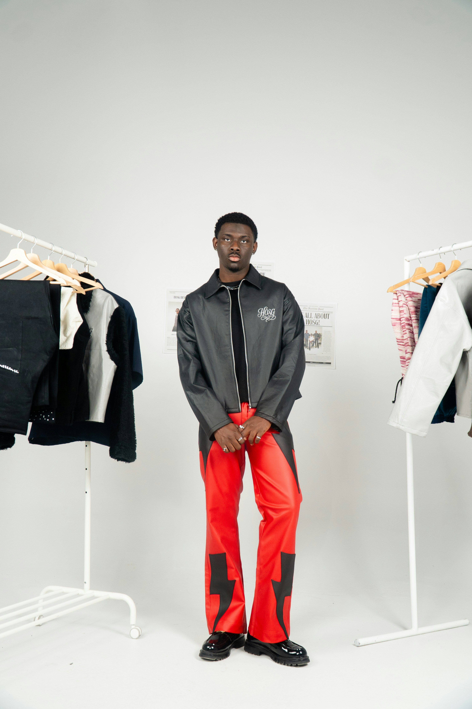

Latest Sneaker Drops in South Africa
Date: April 2026
South Africa's sneaker scene continues to grow, with new releases and limited drops gaining massive attention.
Read MoreExplore the latest in street culture, sneaker drops, and style inspiration.
Date: April 2026
South Africa's sneaker scene continues to grow, with new releases and limited drops gaining massive attention.
Read MoreDate: April 2026
Streetwear has become more than just fashion — it represents identity, expression, and community.
Read MoreDate: April 2026
From oversized fits to bold graphics, hoodies remain a staple in streetwear.
Read MoreSouth African streetwear brands are gaining recognition both locally and globally. With unique designs and authentic storytelling, they are redefining the fashion space.
See how the community styles Swanked pieces.

@user1

@user2
@user3
Listen to curated sounds that define the culture.
Now Playing: Swanked Playlist Vol. 1